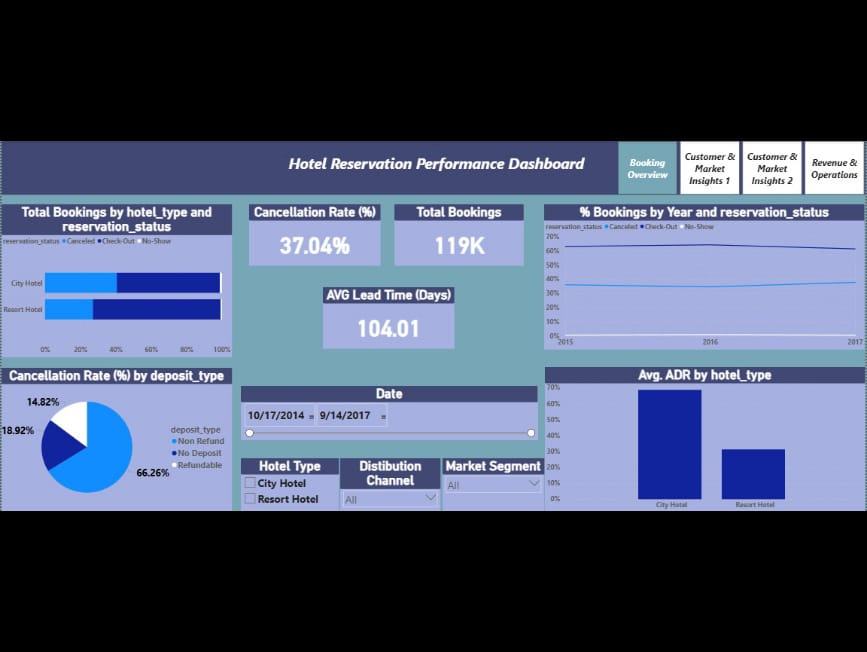
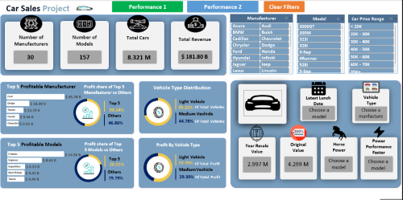
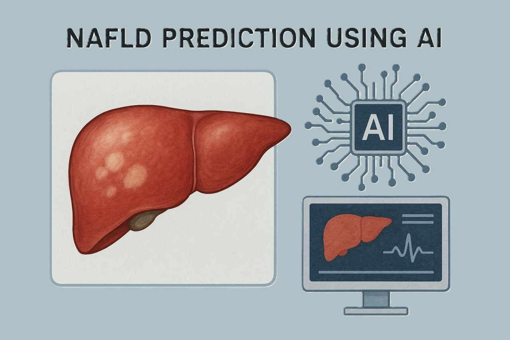

My Projects

Olist E-Commerce Marketing Analytics
Designed a dimensional data model using a Galaxy Schema to integrate e-commerce and marketing data. Used Power Query for data cleaning and transformation, and DAX to calculate business KPIs. Developed Power BI reports to analyze sales, customer behavior, order fulfillment, payments, and marketing performance.
ITI Examination System
Comprehensive end-to-end academic management project for the Information Technology Institute (ITI), enabling efficient student evaluation, performance tracking, and BI insights. Designed a fully normalized database with stored procedures and complete ERD mapping, built a snowflake schema with fact & dimension tables, created interactive Power BI dashboards and SSRS reports, and developed a functional front-end with Lovable AI.

Hotel Reservation Performance Dashboard
Analyzed a dataset of 119,390 hotel bookings to uncover insights on booking patterns, cancellations, and guest behavior. Cleaned data by correcting errors and handling missing values, converted the main table into a star schema, and developed interactive Power BI dashboards to visualize performance and key trends.

Car Sales Project
Analyzed a dataset of 157 car models across 30 manufacturers to derive business insights. Cleaned data using Python, handling missing values with scikit-learn machine learning models, and visualized data in Excel using Power Query, Power Pivot, and DAX to create interactive dashboards showcasing key metrics.

Non-Alcoholic Fatty Liver Disease Analysis
Graduation project focused on analyzing factors contributing to non-alcoholic fatty liver disease using data analysis techniques and machine learning models.